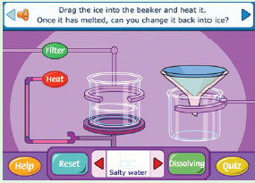
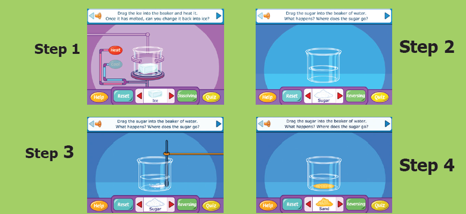

Changes Around Us
Through this activity you will be able to understand reversible & irreversible changes.

Step 1: Use the given URL in the browser. ‘Reversible and irreversible change’s page will open. Use the arrow marks on both sides of the substance to choose another substance to test.
Step 2: Click and drag the substance into the beaker, observe whether it dissolves or not. Click the Dissolving OR Reversing button to switch between the both activities.
Step 3: In the Reversing activity, with some substances you can choose either to cool or to Heat them. With other substances you can choose either to Heat or to filter them by clicking the respective buttons.
Step 4: Click on the Reset button to clear.

Reversible and irreversible change’s URL:
http://www.bbc.co.uk/schools/scienceclips/ages/10_11/rev_irrev_changes_fs.shtml
*Pictures are indicative only